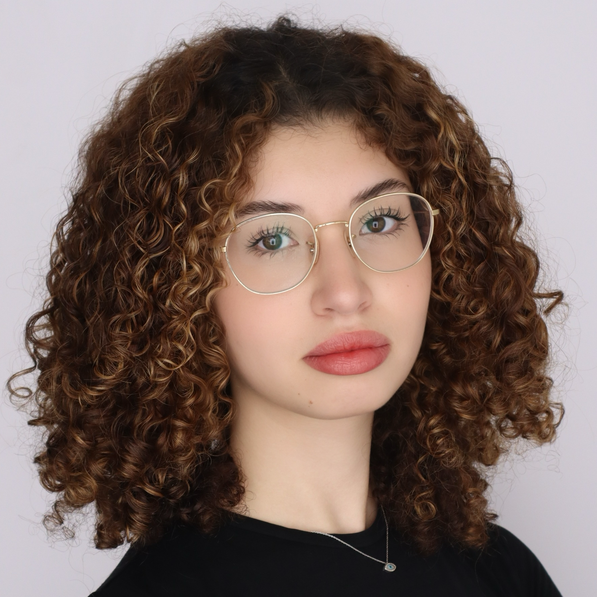

Current
Covariance of the power spectrum
Implementing and validating analytical methods to compute the covariance matrix of the power spectrum multipoles in the general multi-tracer case.

University of Michigan
I’m an undergraduate at the University of Michigan working on precision survey cosmology: using computational and statistical tools to understand the large-scale structure of the universe.
Most of my work is building forward models: simulated galaxy catalogs that look like real surveys, and the tools to measure clustering statistics from them.
I came to cosmology from star and planet formation, where I studied dust evolution in protoplanetary disks with self-consistent models of disk structure and emission.
How do we get robust cosmology out of galaxy surveys?
Implementing and validating analytical methods to compute the covariance matrix of the power spectrum multipoles in the general multi-tracer case.
Investigated dust depletion in protoplanetary disks with a focus on high accretors, and applied simulation-based inference to infer disk properties from observations.
First or co-first author · * equal contribution
The best way to reach me is by email. I’m happy to hear from anyone interested in cosmology, code, or collaboration.